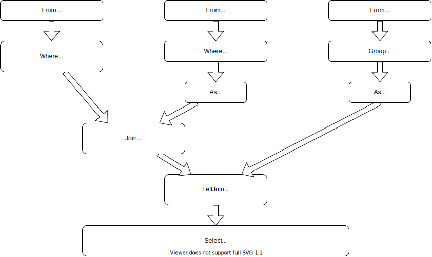

Tutorial
SQL and FunSQL
SQL is a specialized language used for querying and manipulating data in database management systems.
FunSQL is a Julia library for assembling SQL queries. It exposes full expressive power of SQL through a uniform compositional interface.
Sample Database
Throughout this tutorial, we use a tiny SQLite database containing a 10 person sample of simulated patient data extracted from the CMS DE-SynPuf dataset.
If you want to follow along with the tutorial, you can download the database file using the following code.
const URL = "https://github.com/MechanicalRabbit/ohdsi-synpuf-demo/releases/download/20210412/synpuf-10p.sqlite"
const DB = download(URL)Alternatively, to avoid downloading the file more than once, we can register the download URL as an artifact.
using Pkg.Artifacts, LazyArtifacts
const DB = joinpath(artifact"synpuf-10p", "synpuf-10p.sqlite")To interact with a SQLite database, we need to install the SQLite package. Once the package is installed, we can connect to the database.
using SQLite
const conn = SQLite.DB(DB)Database Schema
The data in the sample database is stored in the format of the OMOP Common Data Model, an open source database schema for observational healthcare data. In this tutorial, we will only use a small fragment of the Common Data Model.
Before we can start assembling queries with FunSQL, we need to make FunSQL aware of the database schema. Specifically, for each table in the database, we need to create a corresponding SQLTable object, which encapsulates the table name and its columns.
using FunSQL: SQLTableThe patient data, including basic demographic information, is stored in the table person.
const person =
SQLTable(:person,
columns = [:person_id, :year_of_birth, :location_id])Patient addresses are stored in a separate table location, linked to the person table by the key location_id.
const location =
SQLTable(:location,
columns = [:location_id, :city, :state])The bulk of patient data consists of clinical events: visits to healthcare providers, recorded observations, diagnosed conditions, prescribed medications, etc. In this tutorial we only use two types of events: visits and conditions.
const visit_occurrence =
SQLTable(:visit_occurrence,
columns = [:visit_occurrence_id, :person_id,
:visit_concept_id,
:visit_start_date, :visit_end_date])
const condition_occurrence =
SQLTable(:condition_occurrence,
columns = [:condition_occurrence_id, :person_id,
:condition_concept_id,
:condition_start_date, :condition_end_date])The specific type of the event (e.g., Inpatient visit or Essential hypertension condition) is indicated using a concept id column, which links to the concept table.
const concept =
SQLTable(:concept,
columns = [:concept_id, :concept_name])Different concepts may be related to each other. For instance, Essential hypertension is a Hypertensive disorder, which itself is a Disorder of cardiovascular system. Concept relationships are recorded in the corresponding table.
const concept_relationship =
SQLTable(:concept_relationship,
columns = [:concept_id_1, :concept_id_2, :relationship_id])First Query
Consider the following question:
When was the last time each person born between 1930 and 1940 and living in Illinois was seen by a healthcare provider?
To answer this question, we build the following pipeline of data processing SQL operations.

This pipeline can be assembled with FunSQL. The nodes are created using the corresponding query constructors, which are connected together using the pipe (|>) operator.
using FunSQL: Agg, Join, From, Fun, Get, Group, Select, Where
q = From(person) |>
Where(Fun.and(Get.year_of_birth .>= 1930,
Get.year_of_birth .<= 1940)) |>
Join(:location => From(location) |>
Where(Get.state .== "IL"),
on = Get.location_id .== Get.location.location_id) |>
Join(:visit_group => From(visit_occurrence) |>
Group(Get.person_id),
on = Get.person_id .== Get.visit_group.person_id,
left = true) |>
Select(Get.person_id,
:max_visit_start_date =>
Get.visit_group |> Agg.max(Get.visit_start_date))The following query constructors are available in FunSQL.
| Constructor | Operation |
|---|---|
Append | concatenate datasets |
As (=>) | assign an alias |
From | retrieve the content of a database table |
Group | partition the dataset into disjoint groups |
Join, LeftJoin | correlate two datasets by a particular condition |
Select | specify the output columns |
Where | filter the dataset by a particular condition |
Many of these constructors take scalar expressions as arguments. For instance, Where expects a predicate expression, e.g.,
Where(Fun.and(Get.year_of_birth .>= 1930,
Get.year_of_birth .<= 1940))Here, Get.year_of_birth refers to the column year_of_birth of the input dataset. To make this reference valid, Where must be chained to a query whose output contains this column, such as From(person).
An expression containing a SQL function or a SQL operator is created by taking an appropriate attribute of a namespace object Fun. Certain SQL functions and operators, notably, comparison operators, could be created using the Julia broadcasting notation.
Aggregate functions have their own namespace object Agg, e.g.,
Agg.max(Get.visit_start_date)In FunSQL, aggregate functions can be used in any context where an ordinary SQL expression is permitted as long as the input dataset is partitioned using Group or Partition.
Once the query pipeline is constructed, it could be serialized to a SQL query. We can specify the target SQL dialect, such as :sqlite or :postgresql.
using FunSQL: render
sql = render(q, dialect = :sqlite)
print(sql)
#=>
SELECT "person_3"."person_id", "visit_group_1"."max" AS "max_visit_start_date"
FROM (
SELECT "person_1"."location_id", "person_1"."person_id"
FROM "person" AS "person_1"
WHERE (("person_1"."year_of_birth" >= 1930) AND ("person_1"."year_of_birth" <= 1940))
) AS "person_3"
JOIN (
SELECT "location_1"."location_id"
FROM "location" AS "location_1"
WHERE ("location_1"."state" = 'IL')
) AS "location_3" ON ("person_3"."location_id" = "location_3"."location_id")
LEFT JOIN (
SELECT "visit_occurrence_1"."person_id", MAX("visit_occurrence_1"."visit_start_date") AS "max"
FROM "visit_occurrence" AS "visit_occurrence_1"
GROUP BY "visit_occurrence_1"."person_id"
) AS "visit_group_1" ON ("person_3"."person_id" = "visit_group_1"."person_id")
=#At this point, the job of FunSQL is done. To submit the SQL query to the database engine, we use an appropriate Julia library.
res = DBInterface.execute(conn, sql)In this tutorial, we use DataFrame interface to display the output of the query.
using DataFrames
res |> DataFrame |> display
#=>
1×2 DataFrame
Row │ person_id max_visit_start_date
│ Int64 String
─────┼─────────────────────────────────
1 │ 72120 2008-12-15
=#For the rest of this tutorial, we will use a convenience function that renders the query object, executes the SQL query and returns its output.
function run(q)
sql = render(q, dialect = :sqlite)
res = DBInterface.execute(conn, sql)
DataFrame(res)
end
q |> run
#=>
1×2 DataFrame
Row │ person_id max_visit_start_date
│ Int64 String
─────┼─────────────────────────────────
1 │ 72120 2008-12-15
=#